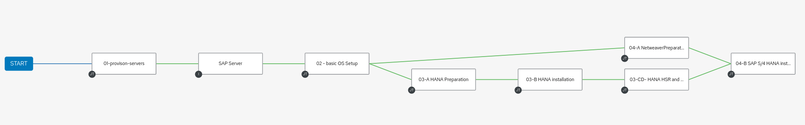

In this section you define the templates to run this demo.
To check proper connection to your VCenter create the following template:
Resources -> TemplatesAdd -> Add Job TemplateSaveLaunchIf you have self-signed certificates make sure the variable vcenter_validate_certs: false is set. You should have done this in your inventory
If everything goes well you get the name of your datacenters (in the same way it has to be put in the inventory variable)
There are some more playbooks like this in the tools directory of this repository to get information on the VMware environment. You can use these playbooks to figure out some of the variables that need to be configured in the inventory.
Resources -> TemplatesAdd -> Add Job TemplateSaveAdd -> Add Job TemplateSaveRepeat Step 2 with proper for the following playbooks: - 03-A-sap-hana-prepare.yml - 03-B-sap-hana-install.yml - 03-03-CD-sap-hana-cluster.yml (also needs VCenter Credentials) - 04-A-sap-netweaver-prepare.yml - 04-B-S4-deployment.yml
Add -> Add Workflow Template```yaml — ## Server Configuration (used in Step1 and Step 2) server_def: - name: hana1 # Enter hostname of your first hana server disk_gb: 400 # Enter diskspace for hana directories mem_mb: 131072 # Enter memory of hana server (128GB recommended) cpus: 8 # number of CPUs group: hanas # don’t change: Groupname for hana server storage_pools: # Storage config for storage role - name: sap disks: - sdb volumes: - name: data size: “128 GiB” mount_point: “/hana/data” fs_type: xfs state: present - name: log size: “128 GiB” mount_point: “/hana/log” fs_type: xfs state: present - name: shared size: “96 GiB” mount_point: “/hana/shared” fs_type: xfs state: present - name: sap size: “40 GiB” mount_point: “/usr/sap” state: present
- name: hana2 # Enter hostname of your second hana server
disk_gb: 400 # following is the same as above
mem_mb: 131072
cpus: 8
group: hanas
storage_pools:
- name: sap
disks:
- sdb
volumes:
- name: data
size: "128 GiB"
mount_point: "/hana/data"
fs_type: xfs
state: present
- name: log
size: "128 GiB"
mount_point: "/hana/log"
fs_type: xfs
state: present
- name: shared
size: "96 GiB"
mount_point: "/hana/shared"
fs_type: xfs
state: present
- name: sap
size: "40 GiB"
mount_point: "/usr/sap"
state: present
- name: s4hana # Enter hostname of your s4hana server
disk_gb: 250
group: s4hanas # Group for s4 servers (do not change)
storage_pools:
- name: sap
disks:
- sdb
volumes:
- name: sap
size: "50 GiB"
mount_point: "/usr/sap"
state: present
- name: sapmnt
size: "20 GiB"
mount_point: "/sapmnt"
state: present
- name: swap
size: "21 GiB"
fs_type: swap
mount_options: swap
state: present
# sap_general_preconfigure (used in Step 3A and 4A)
#-------------------------
sap_domain: ocp.gscoe.intern
sap_general_preconfigure_modify_etc_hosts: true
sap_general_preconfigure_update: true
sap_general_preconfigure_fail_if_reboot_required: false
sap_general_preconfigure_reboot_ok: true
# sap_hana_preconfigure(used in step 3A )
#----------------------
sap_hana_preconfigure_update: true
sap_hana_preconfigure_fail_if_reboot_required: false
sap_hana_preconfigure_reboot_ok: true
# sap_netweaver_preconfigure (used in step 4A)
#---------------------------
# No definition needed
# Path to SAP Software on NFS fileshare (used in step 3B und 4B)
#----------------------------------
# download new HANA version, or S4version -- just put it on the share and change here
sap_hana_version: HANA2SPS06
sap_swpm_product: S4HANA2021.FNDN
# sap_hana_install (used in 3B and particular in 3CD and 4B)
#------------------
sap_hana_install_software_directory: "/"
sap_hana_install_sapcar_filename: SAPCAR
sap_hana_install_software_extract_directory: "/home/sapinst"
sap_hana_install_master_password: "R3dh4t$123"
sap_hana_sid: "RHE"
sap_hana_instance_number: "00"
# sap_install.sap_ha_* (4roles in step 03-CD)
#---------------------
### Cluster Definition
sap_ha_install_pacemaker_cluster_name: cluster1
sap_hana_hacluster_password: 'my_hacluster'
sap_hana_cluster_nodes:
- node_name: rhd-hana1
node_ip: ""
node_role: primary
hana_site: DC01
- node_name: rhd-hana2
node_ip: ""
node_role: secondary
hana_site: DC02
sap_ha_set_hana_vip1: 1.2.3.4 ## Change to Virtual IP of cluster (needs to be in hosts or DNS)
sap_pacemaker_stonith_devices:
- name: "fence_for_vmware"
agent: "fence_vmware_rest"
parameters: >
"pcmk_host_list='hana1,hana2' ssl_insecure=1 ssl=1"
"ipaddr="
"login="
"passwd="
# sap_swpm (used in step 4B)
#----------
# This currently does not work in all setups (see issues)
sap_swpm_update_etchosts: false
# sap_swpm
#----------
# Product ID for New Installation
sap_swpm_product_catalog_id: NW_ABAP_OneHost:.HDB.ABAP
# Software
sap_swpm_software_path: "/"
sap_swpm_sapcar_path: ""
sap_swpm_swpm_path: ""
# NW Passwords
sap_swpm_master_password: "R3dh4t$123"
sap_swpm_ddic_000_password: ""
# HDB Passwords
sap_swpm_db_system_password: ""
sap_swpm_db_systemdb_password: ""
sap_swpm_db_schema_abap_password: ""
sap_swpm_db_sidadm_password: ""
# Default Value
#sap_swpm_db_schema_abap: "SAPHANADB"
# NW Instance Parameters
sap_swpm_sid: S4H
sap_swpm_pas_instance_nr: "01"
sap_swpm_ascs_instance_nr: "02"
sap_swpm_ascs_instance_hostname: ""
sap_swpm_fqdn: ""
# HDB Instance Parameters
# For dual host installation, change the db_host to appropriate value
sap_swpm_db_host: "hanavip"
sap_swpm_db_sid: ""
sap_swpm_db_instance_nr: "" ```
Click Save
Click Visualizer and create the following workflow:
+, select On Success, click Next, select job Template 01 provision servers and click Save01 provisiom servers and select Inventory sync SAP Server on successSAP Server select job template 02 basic OS Setup on success02 basic OS Setup select job template 03-A Hana preparation on success02 basic OS Setup select job template 04-A Netweaver preparation on success03-A Hana preparation select job template 03-B HANA install on success03-B HANA install select to template 03-CD- HANA HSR and Cluster on success03-CD- HANA HSR and Cluster select 04 - SAP S/4HANA install on success04-A Netweaver Preparation, click the chain symbol and connect it to the existing 04 - SAP S/4HANA install tileSaveYour workflow should look like this: 
Appendix: https://access.redhat.com/articles/6964708